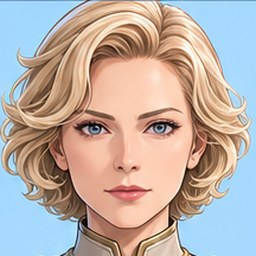

A space game you fly from your phone
Homelancer
Scroll down and the film runs. Scroll back up and it runs backwards.
Test the beta or scroll and watch ↓Sixty-seven star systemsone map · eleven by eleven
and somewhere in all of itOne pilot
with a Corsair on the tailDon't look back
Solara · Unity space · your first dock
Liberty Hub
Unity's trade and patrol station. Every room is a painted picture, and the people who run the place lean in as you pass.
Main Hub
Deck H-01
Cmdr. ValeLiberty Hub Control
Keep your shields up and your credits spent.
Hangar
Repairs · your shipCapt. RennickCargo hauler Bright Margin
Appreciate the escort. Raiders have been bold lately.
Unity Bar
Rumours · live musicShadeHoard's lieutenant · Raiders
Every raider in Solara knows your ship now.
Warning
Spoiler alert
Below this line you see what your ship turns into. Scroll on only if you want to know.
frame 01 · every ship has a second formMech mode
the pilot walks aheadNow look up
Frame 02
Black Gold
Over Venus.
Frame 03
Orange Cannon
Over Io.
Frame 04
Tan Navy
Over Neptune.
Frame 05
Rifle
Over Ganymede.
Planet · below the station
New Terra
Leave the dock and the real map comes into view. A temperate colony world: fly east long enough and you come back where you began.
- Port Meridiancapital
- Saltmarsh Dockscoast
- Dust Flats Colonymining
- Ridgeback Basegarrison
- Iron Foundrymission zone
Port Master OduyaNew Terra Port
Landing beacon's lit whenever you need it.
Your turn
The beta runs in your phone's browser. Nothing to install.
- Every ship, station, mech and pilot on this page is the game's own 3D model, running live.
- Flat pictures stand in for the ships for the first seconds while the models download.